A collection of code from the Infrared RNA design bookchapter
Online resources and software environment
This document is hosted online as Jupyter notebook with precomputed results. Download this file to view, edit and run it in Jupyter.
We recommend to install all required software using Mamba (or Conda) and PIP.
mamba create -n infrared -c conda-forge infrared jupyter jupytext matplotlib seaborn graphviz logomaker
mamba activate infrared
# optionally install the Vienna RNA package (only Linux or MacOS)
mamba install -c conda-forge -c bioconda viennarna
pip install graphviz
mamba deactivate infrared
Start the Jupyter notebook server after activating the environment
mamba activate infrared
jupyter notebook
The original sources are part of the Infrared distribution and hosted on Gitlab (in Jupytext light Script format).
Disclaimer
This notebook contains code for the examples from the bookchapter "Developing complex RNA design applications in the Infrared framework" by Hua-Ting Yao, Yann Ponty, and Sebastian Will.
This document should be used in parallel to the bookchapter.
The main purpose of this notebook is to allow readers of the chapter to easily run examples and possibly experiment with the code. Code is therefore given in the same order as in the bookchapter and under corresponding section titles. In turn, the notebook contains almost no explanations, as these are given in the manuscript.
Compared to the code given in the chapter, we extended some code to make it even more illustrative, e.g. by plotting results. Finally, we provide code to generate figures of the bookchapter in the Appendix.
1 Introduction
import matplotlib.pyplot as plt
target = "((((((((((...))))((((....))))))))))"
model = ir.Model(len(target), 4)
model.add_constraints(rna.BPComp(i, j) for (i, j) in rna.parse(target))
sampler = ir.Sampler(model)
samples = [sampler.sample() for _ in range(10)]
sequences = [rna.ass_to_seq(x) for x in samples]
sequences
['GCAGUUGGAGCAGUUUUGCGAGGUUUCGCAACUGC',
'CCGUGGGGCUUGAGGUUUCUCAAUGGGGAUUACGG',
'UGGUGGUGGGCCUCCCAUUAAAUUCUUAGUUGCUA',
'CUGUCACGUUCUCAGCGAAUAAAUAUAUUUGGUAG',
'CGUUUGGAUUACAAGUUAAGUAAGAAUUUUAGGCG',
'UCGAGGAAUUUGGAAUUGUAGUCUGUUAUCUUCGG',
'AGCGUACGGCGCAGCUGCCGAGUCGUCGGUGUGCU',
'AAGGUUGGGACCGUUCUGGGAGGAUUCCCAGCUUU',
'GGAGGAAUGACUAUCGUGGGAUUUUUCCUUCCUUC',
'ACGGUGACCGCUUCGGUUGUCGCUUGGCGUACUGU']
We are going to visualize the nucleotide frequencies of the sampled sequences if module logomaker is availabe. (e.g. install by conda install logomaker)
def draw_logo(samples,name=None):
import logomaker as lm
sequences = [rna.ass_to_seq(x) for x in samples]
matrix = lm.alignment_to_matrix(sequences = sequences)
logo = lm.Logo(matrix)
logo.style_xticks(rotation=90, fmt='%d', anchor=0)
logo.ax.xaxis.set_ticks_position('none')
if name is not None:
plt.savefig(name)
plt.show()
logo.ax.xaxis.set_tick_params(pad=-1)
return sequences
def opt_draw_logo(samples,name=None,num=10):
try:
draw_logo(samples,name)
except ModuleNotFoundError as e:
print(e)
for x in samples[:num]:
print(rna.ass_to_seq(x))
if len(samples)>num:
print("...")
def assignments_to_seqs(xs):
return [rna.ass_to_seq(x) for x in xs]
opt_draw_logo(samples)
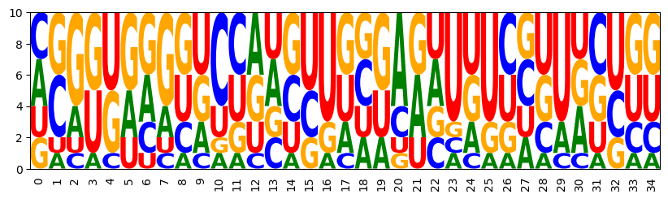
GCAGUUGGAGCAGUUUUGCGAGGUUUCGCAACUGC
CCGUGGGGCUUGAGGUUUCUCAAUGGGGAUUACGG
UGGUGGUGGGCCUCCCAUUAAAUUCUUAGUUGCUA
CUGUCACGUUCUCAGCGAAUAAAUAUAUUUGGUAG
CGUUUGGAUUACAAGUUAAGUAAGAAUUUUAGGCG
UCGAGGAAUUUGGAAUUGUAGUCUGUUAUCUUCGG
AGCGUACGGCGCAGCUGCCGAGUCGUCGGUGUGCU
AAGGUUGGGACCGUUCUGGGAGGAUUCCCAGCUUU
GGAGGAAUGACUAUCGUGGGAUUUUUCCUUCCUUC
ACGGUGACCGCUUCGGUUGUCGCUUGGCGUACUGU
Multiple targets
targets = ["((((((((((...))))((((....))))))))))",
"((((((.((((((((....))))..))))))))))",
".((((((...)))))).(((((((....)))))))"]
for target in targets:
model.add_constraints(rna.BPComp(i, j) for (i, j) in rna.parse(target))
sampler = ir.Sampler(model)
designs = [sampler.sample() for _ in range(10)]
samples = [x for x in designs]
opt_draw_logo(samples)
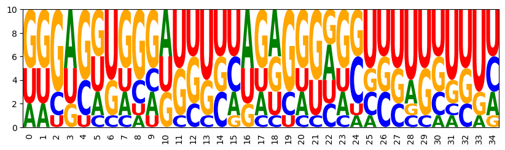
GGGACAUAGGAUGUCUGGAGAUGGCUCUUUGUCUC
UUCUGAGUCCUUCGGAUUUUCGAUGGGGAUUGGGA
UUCUGUGUCUUGCGGAUUCCUGCUUGGGAGUAGGA
AGGAGGUGGGAUUUCCAGGGGGAAGUCCUUCUUUU
GGGAGUUGGAAGUUUUAAGGGGUGAUUUUGUUUUU
AAGGGUUAGAGGUUUUAAGGGGUACUUCUGUCCUU
GAGACGUGGGGUGUUUAGAGGUAGGCUUUUGUUUC
UUUUGGGCUCUCUGGGUCUCUGGCCAGGGUCGGAG
GGGGUCCGAGGGGCUCGGAGGUCGCCUUCGAUUUC
GGGACGUGGGAUGUCCAGAGACGGGUCUUCGUUUU
for target in targets:
model.add_functions([rna.BPEnergy(i, j, False) for (i, j) in rna.parse(target)], 'energy')
3 Methods
3.1 Elementary use of Infrared - A simple design model
target = "((((((((((...))))((((....))))))))))"
model.add_constraints(rna.BPComp(i, j) for (i, j) in rna.parse(target))
sampler = ir.Sampler(model)
samples = [sampler.sample() for _ in range(10)]
sequences = [rna.ass_to_seq(sample) for sample in samples]
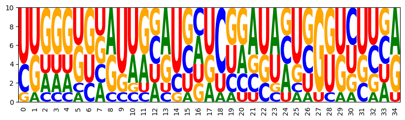
CUGUGGGGAGUAUCUCUGCGCCGUAGCGCUCGCGG
UGGGGUUAGUGUUGCUAUCUGGUACCGGGGCUCCA
UGGGGUUCAUAGGAUGAUCAAAUAAUUGGGUUCUA
CUAAUUCGAUCCGAUCGACGAAGGCUCGUGAUUAG
UUUGGGGAGUUAAACUUUUUGGUUGUGGGUCCAGG
GGUGGUGCGGAGAUUGCGACUAGUGAGUUACCGCU
CGGGAGCUAUUGGAUAGACUGUUAUUAGUUUUUCG
UAAUAAGUCCAGCGGGCGCGGACACUCGUUUGUUA
UUGCCCUGGUUGCGUCAUUCCCCAAGGGGGGGUGA
UUCAUGGUAUUACAUGCUCGAAUCGUUGGUGUGAA
3.2 Sequence constraints in IUPAC code
iupac_sequence = "SNNNNNNNNNRYYNNNNNNNNGNRANNNNNNNNNS"
for i, x in enumerate(iupac_sequence):
model.add_constraints(ir.ValueIn(i, rna.iupacvalues(x)))
sampler = ir.Sampler(model)
samples = [sampler.sample() for _ in range(20)]
opt_draw_logo(samples)
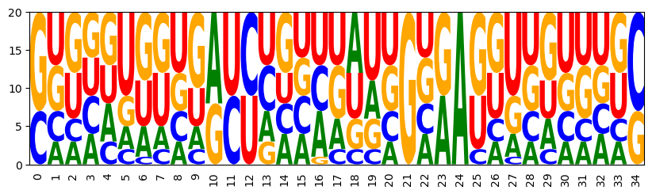
CUACAUUCCGGUCCGGAUUUUGGGAGGGAAUGUGG
CUCUAGUGUGAUUCGCAGUGCGAGAGCGUCUAGAG
CGUUGUAUUUAUCGGGUCUUUGUAAGGAGGUGGCG
CGGGUGGGGGACCCCCUACGAGUAAUCGUCAUUCG
CGGGGUUGCUGUUAGUACAAGGCGAUUUGAUUCUG
GUGGUGAGUGAUCUACUUAACGAGAGUUGUGCCGC
GGACCUUUAAGCUUUAAGUUAGCAAUGACGGGUCC
GUUAGUUUAGACCUUGAUAUAGGGAUGUGGCUGAC
GAGGCUGACUAUUAGUCAACUGGGAGGUUAGCCUC
GAUCAUUUCUACUAGAAGGAUGUGAGUUUGUGAUC
...
3.3 Control of GC content
add functions for GC control:
model.add_functions([rna.GCCont(i) for i in range(n)], 'gc')
set a weight and sample
model.set_feature_weight(1, 'gc')
sampler = ir.Sampler(model)
samples = [sampler.sample() for _ in range(1000)]
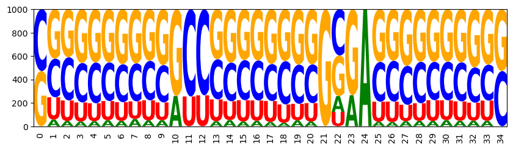
CUGGGCGAGCGUCGCUCUAGGGGGACCUGGCCCAG
GGCCGGGGGUGCCGUCCGGCCGGGAGGCCCCGGUC
GGUUUGUCGGAUCUCGGGUCGGCGAUGACCAGGCC
CGGUGCGAUUGCUGGUCUGCUGGAAAGCGGCGCCG
GGACCCCCGCGCCGUGGCCUUGCGAGAGGGGGUUC
CCCGCCCGGAGUCUCUGUCCCGGGAGGGGGGCGGG
CGCCGCUUCGGCUCGGGGAGGGUAACCUCGUGGCG
CGCCGGCCCGGCUUGGGCGGCGGAAGCCGCCGGCG
GCGGGGGUGUGCUACACCCCAGAGAUGGGCCCCGC
CGCCGGCCGGACUUUGGGGGGGCGACCCCUCGGUG
...
WRITEFIGS = False
for name,weight in [('minus', -1), ('zero', 0), ('plus', 1)]:
model.set_feature_weight(weight, 'gc')
sampler = ir.Sampler(model)
samples = [sampler.sample() for _ in range(1000)]
opt_draw_logo(samples, f"gc_content_{name}-logo.svg")
sequences = assignments_to_seqs(samples)
gc_contents = [100*sum(x in "GC" for x in sequence)/len(sequence) for sequence in sequences]
h = plt.hist(gc_contents,bins=10,range=(0,100))
if WRITEFIGS:
plt.savefig(f"gc_content_{name}-hist.svg")
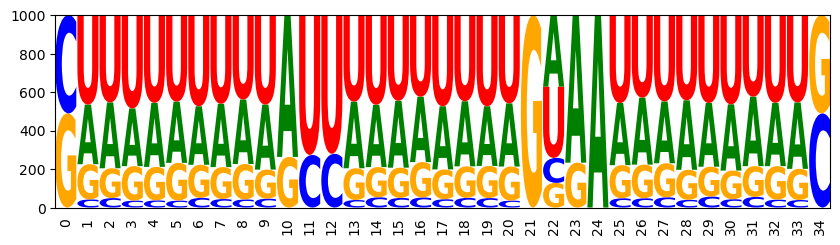
CAUAAUUUUUGUUAAAAGUGAGGAAUUACAUUAUG
GUAAUUUGAUACUGUUGAUAUGUGAAUAUAAUUGC
CUUCUUUAUUAUCAAUGUAUAGAAAUAUAAAGGAG
GGUAGAUAUAGUCUGUAAUAUGAAAAUAUUCUAUC
GUUUAUUCGAAUUUUGGAAUUGAAAAAUUGUAGAC
CUCAGUAAGAAUUUUUUUUUUGUAAAAAAAUUGAG
CUUCUAGUAUAUCAUAUUAUAGGAAUGUAUAGAGG
CUUAAAAUAUAUUAUAUAGUUGGAAGAUUUUUGAG
CUUUUAAUUAAUUUAAUUAUUGUAAAAUAUAAAAG
CUUUUGUUUUGUUAAGGAAAUGUAAAUUUCGAAAG
...
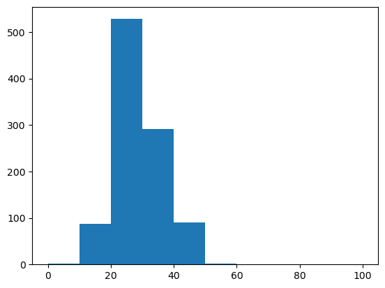
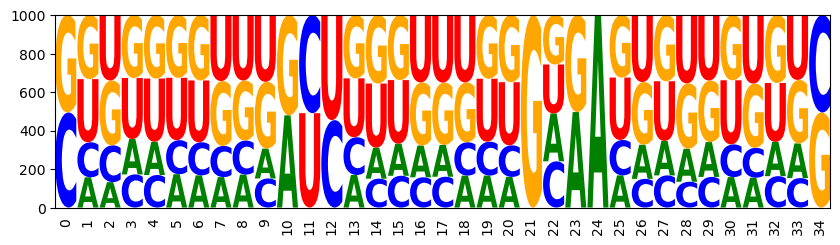
GCUAGAUGGUGCCACUGGAGUGAAAGCUUUCUGGC
CACAGAAGUUGCCAGUUUCCGGUGAUGGAUCUGUG
CAGUGACUCGACCUGGGGACGGCAAUGUUUUACUG
CUCAACUCAGAUCCUGAUUAGGAAACUAAGUUGGG
CUGCUUGGACGUCGUUUUCUCGGGAGAGGAGGUAG
GAAUAGGCGGACUUUGCUGCCGUAAGGCGUUAUUC
GUUUCGGUGGAUCCUGUAAAGGAGAUUUUCGGAAC
CGGCUUGGGUGUCGUUUGAGUGGAAAUUCAGGUUG
GGGACUGGGGACCCUUUUUGCGAGAGUAAAGUCUC
GGUGACCGUUACCAACGGCCGGCGAUGGUGUUGCC
...
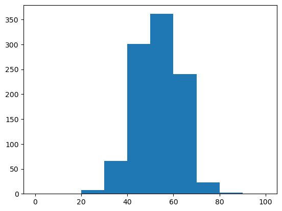
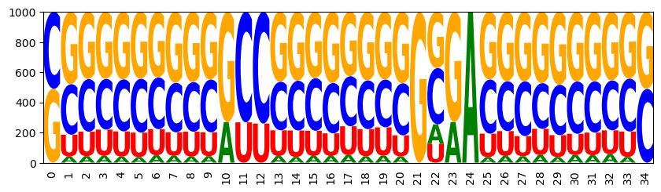
GCAUAUCGCGACCCGCGCGUGGGGACACGAUGUGC
GGCAUAGCGCGCCGUGCUGCCGCAAGGUGUAUGCC
CGGCGCGUCGACCCGACCUGCGGAAGCGGGCGCCG
CGCGCUGGGGGCCCUCCCCGAGGGAUCGGAGCGCG
CUGGUGGGUGGUCCACUUGGCGUGAGCCGCGCCGG
CGGGGGCCGGGCCCCGGCGCCGUGAGGUGCUUCCG
CCGGGGGGCCGCCGGCCGGGUGUGAGCCCCCCCGG
CGCGCCGCGGGCUCCGCUCGCGAGAGCGAGGUGCG
GGUGCGCGGGGUCCCCGGCCGGAGAUGGCUGUACC
GCCGUGGGGGACCUCCCGUGCGCGAGCACUGUGGC
...
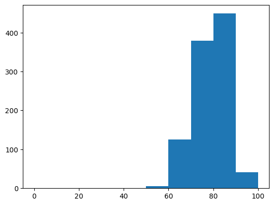
Set a target of 75% GC content and then draw targeted samples
sampler = ir.Sampler(model)
sampler.set_target( 0.75 * n, 0.01 * n, 'gc' )
samples = [sampler.targeted_sample() for _ in range(1000)]
opt_draw_logo(samples)
sequences = assignments_to_seqs(samples)
gc_contents = [100*sum(x in "GC" for x in sequence)/len(sequence) for sequence in sequences]
gc_content = sum(gc_contents) / len(gc_contents)
print(f"GC content in samples: {gc_content:0.2f}%")
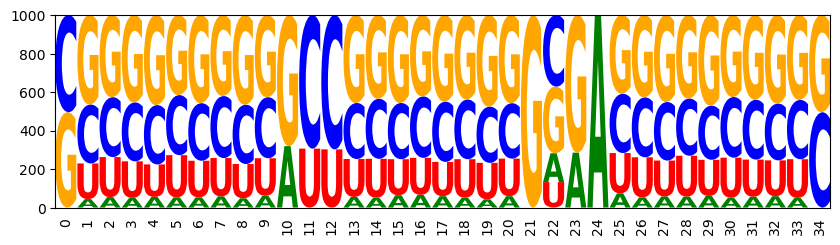
CCCAGGGGGGACCCUCCGUCGGCGACGACUUUGGG
GCGGGCGUGGAUCCCGCCCGUGCGAAUGGGCUUGC
GGUUCCAACUGCUGGUUGCGGGGGACCGCGGGGCC
GCCAGUCGGGACCUCCGGGGGGCAAUUCCGCUGGC
GGCGUUGGGGGUCUUUCCCGUGCGAGCGGGGCGUC
GGGGCGCCGUACUGCGGGUUGGCAACGGUCGCUCC
CCGGACUUGGAUCUCGACCGGGGGACCGGGUCCGG
GCCGCGCUAUGCCGUGGGUGCGCAAGUGUCGCGGC
GGGGUCCUUAGCUUAGGCCCUGGGAGGGGGGCCCC
GCUUCGGGUCGCUGACCGCACGCAAGUGCCGGGGC
...
GC content in samples: 74.29%
3.4 Controlling energy - Multiple features
model = ir.Model(n,4)
bps = rna.parse(target)
model.add_constraints(rna.BPComp(i, j) for (i, j) in bps)
model.add_functions([rna.GCCont(i) for i in range(n)], 'gc')
add (base pair) energy control
model.add_functions([rna.BPEnergy(i, j, (i-1, j+1) not in bps)
for (i, j) in bps], 'energy')
target specific GC and low energy
model.set_feature_weight(-2, 'energy')
sampler = ir.Sampler(model)
sampler.set_target(0.75*n, 0.01*n, 'gc')
samples = [sampler.targeted_sample() for _ in range(10)]
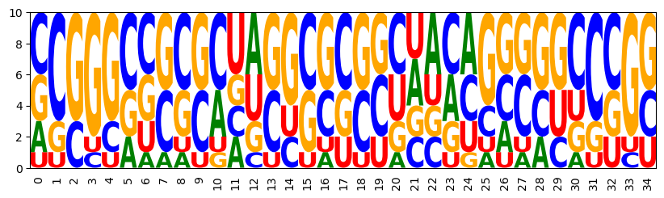
CCGGGCUCCGAGUCGGGCUGGCUAUCCAGGCCUGG
GCCGGGCGCUCUAGGCGCCUCGACUGAGGUUCGGC
CCGGGGCGUGAACCGCGUCCUUCCAGGGACUCCGG
GCGGCCACCCCGUGGGUGGGUUAACAUCCGGCCGC
CCGGGCCGGGCAAUCCGUGCCAGAAGGCAGCCUGG
AGCGCACCACUCGGUGGGGGCCGCCGCUCUGUGCU
AGGUGCUGCGGCUCGCACGGCACCAGCCGGCGCUU
GCGCUAGCGCCUAGCGCCGCGAAUCCGCGUAGCGC
CCGGGGGGCCAUGGGCCCCUAUUGAUAGGCCCCGG
UUCGGCGAGGCUACUUCGCCUGAGGGGGCGCCGGG
add stacking energy control - this could be used in place of defining base pair energyin the code above
model.add_functions([rna.StackEnergy(i, j)
for (i,j) in bps if (i+1,j-1) in bps], 'energy')
3.5 Targeting Turner energy - Customized features
Note: From this point on, we require RNA energy evaluation based on the Vienna RNA library. Under Mac and Linux, the functionality is accessed via module RNA of the library. Since, this is typically unavailable on Windows, we provide a work around.
try:
from RNA import energy_of_struct
except:
print("*Warning*: the RNA Python bindings cannot be imported.\n\n"
"For Linux and MaxOS it is recommened to install viennarna via conda. "
"Windows users are asked to install the Vienna package using the provided Windows installer "
"and make sure that the command line tool RNAeval is found based on their search path."
)
def energy_of_struct(seq,struct):
try:
import subprocess
import re
p = subprocess.run(["RNAeval"], input=f"{seq}\n{struct}".encode('utf-8'), capture_output=True)
m = re.search(r'([0-9-.]*)\)$',p.stdout.decode('utf-8').split('\n')[1])
res = float(m[1])
except Exception as e:
print(f"Cannot evaluate energy of {seq}, {struct}")
raise e
return res
model = ir.Model(n,4)
bps = rna.parse(target)
model.add_constraints(rna.BPComp(i, j) for (i, j) in bps)
model.add_functions([rna.GCCont(i) for i in range(n)], 'gc')
model.add_functions([rna.BPEnergy(i, j, (i-1, j+1) not in bps)
for (i, j) in bps], 'energy')
add the Turner energy feature
model.add_feature('Energy', 'energy',
lambda sample, target=target:
energy_of_struct(rna.ass_to_seq(sample), target))
specify targets and draw targeted samples
sampler = ir.Sampler(model)
sampler.set_target(0.75*n, 0.05*n, 'gc')
sampler.set_target(-10, 0.5, 'Energy')
samples = [sampler.targeted_sample() for _ in range(10)]
opt_draw_logo(samples)
sequences = assignments_to_seqs(samples)
[(seq,energy_of_struct(seq, target)) for seq in sequences]
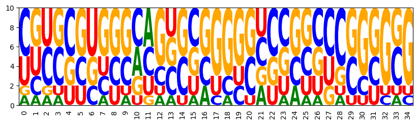
CUACGUGCGGAAGCCGCGCGCUGCAGCGCGUGUGG
GGCCGCUUGGUGGUCAGUGGGGGUCCCUGGCGGCC
CGCCUGCGCUGACAGUGGCUGCUCGCAGCUGGGCG
CCUGCGUGGCCCGGCCAGAUCUCGGGGUUCGCGGG
CCGGCUUGGCCUGGCCGGGGGAUGGUUUCGGCCGG
UGUGCCUACAGAUUGUGCGCCGCCGGGCGGGUGCG
AUCUGGGUGGCCCCUGCGGGUCCUCACCCCCGGAU
UUUGUCCGUGCAGCGCGGGGCUCCAGCCCGGCGGG
CAUCCGUGCGACAUGCAGGCGACGGUGCCCGGGUG
UGCACGGCUCAUGGGGCUGGGCGACCUCACGUGCG
[('CUACGUGCGGAAGCCGCGCGCUGCAGCGCGUGUGG', -10.399999618530273),
('GGCCGCUUGGUGGUCAGUGGGGGUCCCUGGCGGCC', -10.100000381469727),
('CGCCUGCGCUGACAGUGGCUGCUCGCAGCUGGGCG', -10.100000381469727),
('CCUGCGUGGCCCGGCCAGAUCUCGGGGUUCGCGGG', -10.199999809265137),
('CCGGCUUGGCCUGGCCGGGGGAUGGUUUCGGCCGG', -10.0),
('UGUGCCUACAGAUUGUGCGCCGCCGGGCGGGUGCG', -10.199999809265137),
('AUCUGGGUGGCCCCUGCGGGUCCUCACCCCCGGAU', -9.600000381469727),
('UUUGUCCGUGCAGCGCGGGGCUCCAGCCCGGCGGG', -9.800000190734863),
('CAUCCGUGCGACAUGCAGGCGACGGUGCCCGGGUG', -10.199999809265137),
('UGCACGGCUCAUGGGGCUGGGCGACCUCACGUGCG', -9.600000381469727)]
3.6 Multiple target targets
model = ir.Model(n,4)
model.add_functions([rna.GCCont(i) for i in range(n)], 'gc')
for k, target in enumerate(targets):
bps = rna.parse(target)
model.add_constraints(rna.BPComp(i, j) for (i, j) in bps)
model.add_functions([rna.BPEnergy(i, j, (i-1, j+1) not in bps)
for (i, j) in bps], f'energy{k}')
Target specific GC content and high affinity to all targets
for k,_ in enumerate(targets):
model.set_feature_weight(-2, f'energy{k}')
sampler = ir.Sampler(model)
sampler.set_target(0.75*n, 0.05*n, 'gc')
samples = [sampler.targeted_sample() for _ in range(5)]
opt_draw_logo(samples)
sequences = assignments_to_seqs(samples)
try:
import RNA
sequences = ["".join([seq]+[f" {energy_of_struct(seq, target):5.1f}" for target in targets]) for seq in sequences]
except ModuleNotFoundError:
pass
sequences
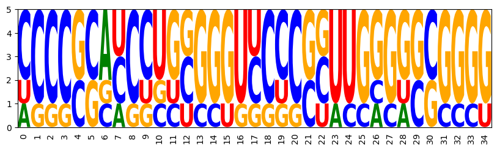
AGGGGCCAGGGGUCCUGGGGGGCACCCCUGCCCCU
CCCCGGGCCUCUCGGGUCCUCGGUUGAGGCCGGGG
CCCCCCAUCCUGGGGGUUCCCCCUUGGGGGGGGGG
UCCCGCACCCUGCGGGUCCCCGUUUGGGGGCGGGG
CCCCCGAUCCUCGGGGUUCCCCGUUGGGACGGGGG
['AGGGGCCAGGGGUCCUGGGGGGCACCCCUGCCCCU -17.6 -21.8 -19.3',
'CCCCGGGCCUCUCGGGUCCUCGGUUGAGGCCGGGG -16.8 -20.0 -18.0',
'CCCCCCAUCCUGGGGGUUCCCCCUUGGGGGGGGGG -16.0 -24.2 -21.5',
'UCCCGCACCCUGCGGGUCCCCGUUUGGGGGCGGGG -19.0 -21.9 -19.3',
'CCCCCGAUCCUCGGGGUUCCCCGUUGGGACGGGGG -15.5 -23.4 -20.1']
Target specific GC content and specific Turner energies for all targets
add Turner energy features for all target targets
for k, target in enumerate(targets):
model.add_feature(f'Energy{k}', f'energy{k}',
lambda sample, target=target:
energy_of_struct(rna.ass_to_seq(sample), target))
sampler = ir.Sampler(model)
sampler.set_target(0.75*n, 0.01*n, 'gc')
sampler.set_target( -15, 1, 'Energy0')
sampler.set_target( -20, 1, 'Energy1')
sampler.set_target( -20, 1, 'Energy2')
samples = [sampler.targeted_sample() for _ in range(5)]
opt_draw_logo(samples)
sequences = assignments_to_seqs(samples)
["".join([seq]+[f" {energy_of_struct(seq, target):5.1f}" for target in targets]) for seq in sequences]
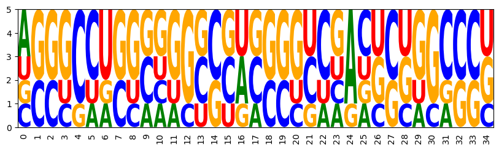
AGGGCCUGGGAGGCCCGAGGGUCGAUCCUGGCCCU
CCCCCAGCUCCUGGGGUCCCCUAUAGGGGUGGGGG
AGGGGCUGGAGGCUCUAGGGGGCGACUCCGCCCCU
GGGGCUUGGGGAGCCCAGGGGCUAGCUCUAGCCCC
UCCUCCACCCUGGGGGUCCCUCCCAAGGGGGAGGG
['AGGGCCUGGGAGGCCCGAGGGUCGAUCCUGGCCCU -14.7 -20.8 -19.8',
'CCCCCAGCUCCUGGGGUCCCCUAUAGGGGUGGGGG -15.9 -19.6 -19.2',
'AGGGGCUGGAGGCUCUAGGGGGCGACUCCGCCCCU -15.0 -20.9 -19.3',
'GGGGCUUGGGGAGCCCAGGGGCUAGCUCUAGCCCC -14.3 -19.2 -20.7',
'UCCUCCACCCUGGGGGUCCCUCCCAAGGGGGAGGG -15.2 -19.8 -20.7']
Plot dependencies and tree decomposition
from IPython.display import Image
import re
filename = 'dependency_graph.dot'
model.write_graph(filename, True)
ir.dotfile_to_png(filename)
ir.dotfile_to_pdf(filename)
filename = re.sub(r"dot$","png",filename)
Image(filename=filename,width=600)
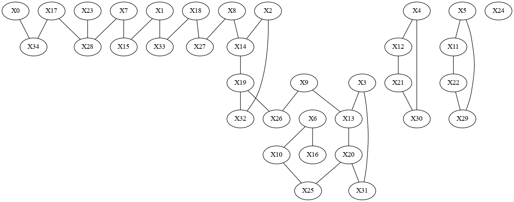
sampler = ir.Sampler(model)
print(f"Tree width: {sampler.treewidth()}")
filename="treedecomp"
sampler.plot_td(filename,'png')
sampler.plot_td(filename,'pdf')
sampler.plot_td(filename+".dot",'dot')
Image(filename=filename+".png",width=300)
Tree width: 2
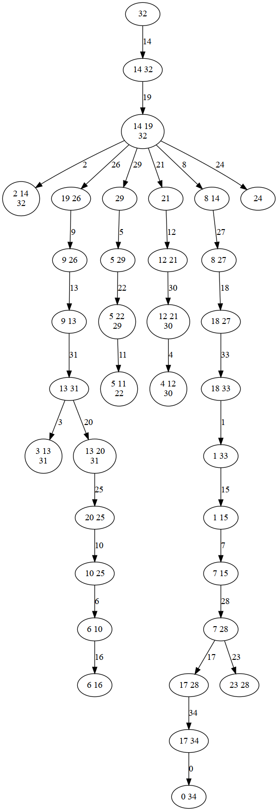
3.7 Negative design by sampling
target = targets[0]
n = len(target)
def is_mfe_design(sequence, target):
fc = RNA.fold_compound(sequence)
return fc.eval_structure(target) == fc.mfe()[1]
def single_target_design_model(target):
n, bps = len(target), rna.parse(target)
model = ir.Model(n, 4)
model.add_constraints(rna.BPComp(i, j) for (i, j) in bps)
model.add_functions([rna.GCCont(i) for i in range(n)], 'gc')
model.add_functions([rna.BPEnergy(i, j, (i-1, j+1) not in bps)
for (i, j) in bps], 'energy')
model.set_feature_weight(-1.5, 'energy')
return model
solve by direct sampling
sampler = ir.Sampler(single_target_design_model(target))
sampler.set_target(0.7 * n, 0.1 * n, 'gc')
for i in range(50):
seq = rna.ass_to_seq(sampler.targeted_sample())
if is_mfe_design(seq, target):
print(f"{i} {seq}")
2 CUGAGGCGCCUAUGGCGGGGGCCGACCCCCCUCAG
3 GGUCGGAGGGGCCCCCUGAGCUACCGCUCCCGACC
6 GGGCGGAGGCAGGGCCUUCCCUAUCGGGGCCGCCU
7 GGGGGCGGGCUUAGCCCUCGUUAAAGCGAGCCCCC
13 CGCGGCCCGAUGUUCGGGAGCCGCUGCUCGCCGCG
17 CACCGGCCCCAAGGGGGGACGGACCCGUCCCGGUG
18 CCCUGGCCGCUAUGCGGGCGGAAUUCUGCCCAGGG
26 GGGUGGGUCCAAGGGACGCGGCAAACCGCCCACCC
28 GCGGCUAGAGUUACUCUCCGGCAUUCCGGGGCCGC
37 GGCCCUGCGGUUGCCGCCCCCCAAAGGGGAGGGCC
38 UCCUGCGCGCCGUGCGUCGAUGCCCAUCGGCGGGA
40 CGAACCCCCCUACGGGGGCGCCAGUGCGCGGUUCG
42 GCGGGGUCCGGGACGGAUGGGAGCACUCACCCCGC
46 CCCCGCGGUGUAACGCCGCCUACGCAGGUGCGGGG
def target_frequency(sequence, target):
fc = RNA.fold_compound(sequence)
fc.pf()
return fc.pr_structure(target)
sampler = ir.Sampler(single_target_design_model(target))
sampler.set_target(0.7 * n, 0.1 * n, 'gc')
best = 0
for i in range(100):
seq = rna.ass_to_seq(sampler.targeted_sample())
freq = target_frequency(seq, target)
if freq > best:
best = freq
print(f"{i} {seq} {freq:.6f}")
0 CGUGCGCCCCACAGGGGGGGGAUUACCCCCGUGCG 0.114687
5 GCCGUACGCCAUUGGCGGGGAAGUUUCUCUGCGGC 0.568546
8 GCACCCGGCCGUUGGCCGGUCGAUAGACCGGGUGC 0.929765
3.8 Larger single-target designs by constraint generation
RNAPOND-like negative design (generating constraints for disruptive base pairs).
from collections import Counter
target = "..(((..((((.....)))).((...(((.....)))...))...))).."
n = len(target)
bps = rna.parse(target)
def cg_design_iteration():
model = single_target_design_model(target)
model.add_constraints(rna.NotBPComp(i, j) for (i, j) in dbps)
sampler = ir.Sampler(model, lazy=True)
if sampler.treewidth() > 10 or not sampler.is_consistent():
return "Not found"
ctr = Counter()
found, sol = False, None
for i in range(100):
seq = rna.ass_to_seq(sampler.targeted_sample())
fc = RNA.fold_compound(seq)
mfe, mfe_e = fc.mfe()
if fc.eval_structure(target) == mfe_e:
sol = seq
ctr.update(rna.parse(mfe))
ndbps = [x[0] for x in ctr.most_common() if x[0] not in bps]
dbps.extend(ndbps[:2])
return sol
dbps, seq = [], None
while seq is None:
seq = cg_design_iteration()
print(seq)
UACCACCGGGGCAAAUCCCCAUCGUAGGCAACAAGCUAUAGACCAUGGAG
3.9 Negative design by stochastic optimization with partial resampling
Define multi-target design model for resampling of subsets
import RNA
targets = ["((((((((((...))))((((....))))))))))",
"((((((.((((((((....))))..))))))))))",
".((((((...)))))).(((((((....)))))))"]
def multi_defect(sequence, targets, xi=1):
k = len(targets)
fc = RNA.fold_compound(sequence)
ee = fc.pf()[1]
eos = [fc.eval_structure(target) for target in targets]
diff_ee = sum(1/k * (eos[i] - ee) for i in range(k))
diff_targets = sum(2/(k*(k-1)) * abs(eos[i]-eos[j])
for i in range(k) for j in range(k) if i<j)
return diff_ee + xi * diff_targets
import random
import math
Optimize an ojective function by a Monte-Carlo optimization strategy with model resampling
def mc_optimize(model, objective, steps, temp, start=None):
sampler = ir.Sampler(model)
cur = sampler.sample() if start is None else start
curval = objective(cur)
best, bestval = cur, curval
ccs = model.connected_components()
weights = [1/len(cc) for cc in ccs]
for i in range(steps):
cc = random.choices(ccs,weights)[0]
new = sampler.resample(cc, cur)
newval = objective(new)
if (newval >= curval
or random.random() <= math.exp((newval-curval)/temp)):
cur, curval = new, newval
if curval > bestval:
best, bestval = cur, curval
return (best, bestval)
n = len(targets[0])
model = ir.Model(n, 4)
model.add_functions([rna.GCCont(i) for i in range(n)], 'gc')
for target in targets:
ss = rna.parse(target)
model.add_constraints(rna.BPComp(i, j) for (i, j) in ss)
model.add_functions([rna.BPEnergy(i, j, (i-1, j+1) not in ss)
for (i, j) in ss], 'energy')
model.set_feature_weight(-0.8, 'energy')
model.set_feature_weight(-0.3, 'gc')
best, best_val = mc_optimize(model,
lambda x: - multi_defect(rna.ass_to_seq(x),targets,1),
1000, 0.01)
print(rna.ass_to_seq(best), - best_val)
GGGGUGCGGGGUACCCGGGGGUAGUCCCCUACCCC 2.445469538370768
3.10 A real world example: design of a Tandem-Riboswitch
seqTheo0 = "AAGUGAUACCAGCAUCGUCUUGAUGCCCUUGGCAGCACUUCAGAAAUCUC"\
"UGAAGUGCUGUUUUUUUU"
seqTet0 = "GGCCUAAAACAUACCAGAGAAAUCUGGAGAGGUGAAGAAUACGACCACCU"\
"AGGCCGACAGUGGCCUAGGUGGUCGUUUUUUUUU"
seqTheo = "NNNNGAUACCAGCAUCGUCUUGAUGCCCUUGGCAGCNNNNNNNNNNNNNN"\
"NNNNNNNNNNUUUUUUUU"
aptTheo = "(((((...((((((((.....)))))...)))...))))).........."\
".................."
termTheo = "...............................(((((((((((((....))"\
")))))))))))......."
seqTet = "NNNNNAAAACAUACCAGAGAAAUCUGGAGAGGUGAAGAAUACGACCACCU"\
"ANNNNNNNNNNNNNNNNNNNNNNNNUUUUUUUUU"
termTet = "........................................(((((((((("\
"(((((......)))))))))))))))........"
aptTet = "((((((.......(((((....)))))...((((...........)))))"\
")))))............................."
spacerLen = 30
aptamers = aptTheo + "."*spacerLen + aptTet
terminators = termTheo + "."*spacerLen + termTet
sequence = seqTheo + "N"*spacerLen + seqTet
n = len(aptTheo) + spacerLen + len(aptTet)
variants = dict(
empty = '.'*n,
aptTheo = aptTheo + '.'*(n-len(aptTheo)),
aptTet = '.'*(n-len(aptTet)) + aptTet,
termTheo = termTheo + '.'*(n-len(aptTheo)),
termTet = '.'*(n-len(aptTet)) + termTet,
spacer = '.'*len(aptTheo) + 'x'*spacerLen + '.'*len(aptTet)
)
def constrained_efe(sequence,c):
fc = RNA.fold_compound(sequence)
fc.hc_add_from_db(c)
return fc.pf()[1]
def rstd_objective(sequence):
efe = {k:constrained_efe(sequence,variants[k])
for k in variants}
term_stability = efe['termTheo'] + efe['termTet'] \
- 2*efe['empty']
apt_target = abs(efe['aptTheo']-efe['empty']-7) \
+ abs(efe['aptTet']-efe['empty']-10)
spacer_unfolding = efe['spacer']-efe['empty']
return term_stability + apt_target + spacer_unfolding
rstd_targets = [aptamers, terminators]
n = len(rstd_targets[0])
model = ir.Model(n, 4)
for i, x in enumerate(sequence):
model.add_constraints(ir.ValueIn(i, rna.iupacvalues(x)))
model.add_functions([rna.GCCont(i) for i in range(n)], 'gc')
for k,target in enumerate(rstd_targets):
ss = rna.parse(target)
model.add_constraints(rna.BPComp(i, j) for (i, j) in ss)
model.add_functions([rna.BPEnergy(i, j, (i-1, j+1) not in ss)
for (i, j) in ss], f'energy{k}')
model.set_feature_weight(-0.6, 'energy0')
model.set_feature_weight(-1, 'energy1')
model.set_feature_weight(-0.3, 'gc')
objective = lambda x: -rstd_objective(rna.ass_to_seq(x))
best, best_val = ir.mc_optimize(model, objective,
steps = 500, temp = 0.03)
print(rna.ass_to_seq(best), -best_val)
CGAGGAUACCAGCAUCGUCUUGAUGCCCUUGGCAGCCUUGCCACUUAUGUGGCGAGGUUGUUUUUUUUAAUAUAUCAGAGCUUUUUUUUAAUAAUCGCAGCCUAAAACAUACCAGAGAAAUCUGGAGAGGUGAAGAAUACGACCACCUAGGUUGGAAAGGGCCUGGGUGGUUGUUUUUUUUU 1.2818794250488281
Run optimzation in parallel
import concurrent.futures
steps = 500
jobs = 12
def my_rstd_optimize(i):
random.seed(None)
objective = lambda x: -rstd_objective(rna.ass_to_seq(x))
best,best_val = mc_optimize(model, objective, steps = steps, temp = 0.03)
return rna.ass_to_seq(best), -best_val
with concurrent.futures.ProcessPoolExecutor() as executor:
res = executor.map(my_rstd_optimize, range(jobs))
res = list(res)
for seq, val in res:
print(f"{seq} {val:.2f}")
fc = RNA.fold_compound(seq)
for k,c in variants.items():
print(f"{k:20} {fc.eval_structure(c):8.2f} {constrained_efe(seq,c):8.2f} {constrained_efe(seq,c)-constrained_efe(seq,variants['empty']):8.2f}")
GUUUGAUACCAGCAUCGUCUUGAUGCCCUUGGCAGCGGGCGUGGAACUCCGCGUCCGUUGUUUUUUUUGAUGACCGCAAUAAUCCUCAUACGUAGCAACGGGUAAAACAUACCAGAGAAAUCUGGAGAGGUGAAGAAUACGACCACCUACCUGCUGGUACGGGUAGGUGGUCGUUUUUUUUU 3.91
empty 0.00 -76.32 0.00
aptTheo -11.90 -69.34 6.98
aptTet -15.40 -66.46 9.87
termTheo -23.10 -76.31 0.01
termTet -28.20 -76.32 0.00
spacer 0.00 -72.58 3.74
GUUUGAUACCAGCAUCGUCUUGAUGCCCUUGGCAGCGGGCGCAGUCCCCUGCGUCCGUUGUUUUUUUUGUCAGCAUAGUAAGUAAAAUAAUGUAAUCGCGGGUAAAACAUACCAGAGAAAUCUGGAGAGGUGAAGAAUACGACCACCUACCCGCGUUUACGGGUGGGUGGUUGUUUUUUUUU 4.30
empty 0.00 -74.90 0.00
aptTheo -11.90 -67.57 7.33
aptTet -17.60 -63.58 11.32
termTheo -23.00 -74.87 0.03
termTet -28.00 -74.90 0.00
spacer 0.00 -72.29 2.61
GUUCGAUACCAGCAUCGUCUUGAUGCCCUUGGCAGCGGGCGUCGGCAACGACGUCCGUUGUUUUUUUUUUGGACAACGAUACUUAAAUACGGAAAUGGCGGGUAAAACAUACCAGAGAAAUCUGGAGAGGUGAAGAAUACGACCACCUACCUGCGAGUACGGGUAGGUGGUCGUUUUUUUUU 3.97
empty 0.00 -76.22 0.00
aptTheo -13.90 -69.66 6.57
aptTet -15.40 -66.17 10.06
termTheo -23.90 -76.16 0.07
termTet -28.20 -76.22 0.00
spacer 0.00 -72.81 3.41
GUUCGAUACCAGCAUCGUCUUGAUGCCCUUGGCAGCGGGCGCACAACCGUGCGUCCGUUGUUUUUUUUCUUGACAGCGCGCUUGAAAUACGGUAAUUACUGGUAAAACAUACCAGAGAAAUCUGGAGAGGUGAAGAAUACGACCACCUACCGGCAAUUACUGGUAGGUGGUUGUUUUUUUUU 3.90
empty 0.00 -75.42 0.00
aptTheo -13.90 -68.35 7.06
aptTet -15.40 -65.48 9.94
termTheo -23.60 -75.40 0.02
termTet -26.10 -75.42 0.00
spacer 0.00 -71.67 3.75
GUUUGAUACCAGCAUCGUCUUGAUGCCCUUGGCAGCGGACCGUUUGCAAACGGUCCGCUGUUUUUUUUAUAUAAUUUAAAUAACCGCGGAAAGUCUCAUUUGUAAAACAUACCAGAGAAAUCUGGAGAGGUGAAGAAUACGACCACCUACGGGUGCUAUUCUGUGGGUGGUUGUUUUUUUUU 3.21
empty 0.00 -70.64 0.00
aptTheo -11.50 -63.07 7.57
aptTet -10.00 -60.69 9.95
termTheo -24.00 -70.59 0.05
termTet -23.90 -70.63 0.00
spacer 0.00 -68.10 2.54
GGUUGAUACCAGCAUCGUCUUGAUGCCCUUGGCAGCGGCCCGCCCUUAGGCGGGCUGCUGUUUUUUUUAAUAUAUUCAUACUAAACGCAACUAGCACUCGCUUAAAACAUACCAGAGAAAUCUGGAGAGGUGAAGAAUACGACCACCUAAGCGAGAGGGCGCUUAGGUGGUUGUUUUUUUUU 3.35
empty 0.00 -78.81 0.00
aptTheo -13.80 -71.58 7.23
aptTet -15.60 -68.97 9.84
termTheo -28.30 -78.79 0.02
termTet -26.10 -78.80 0.00
spacer 0.00 -75.86 2.94
GGAAGAUACCAGCAUCGUCUUGAUGCCCUUGGCAGCUUCCGUAGAAAGCUGCGGAGGCUGUUUUUUUUACACGAAUACAUGACUUUUAUUGACCUAACGCGCUAAAACAUACCAGAGAAAUCUGGAGAGGUGAAGAAUACGACCACCUAGUGCGGCUAGGUACUAGGUGGUCGUUUUUUUUU 2.11
empty 0.00 -72.60 0.00
aptTheo -15.70 -65.60 7.00
aptTet -16.20 -62.70 9.90
termTheo -22.40 -72.56 0.04
termTet -28.30 -72.60 0.00
spacer 0.00 -70.63 1.97
CCGUGAUACCAGCAUCGUCUUGAUGCCCUUGGCAGCGCGGGUGCGAUGGCAUUCGCGCUGUUUUUUUUCACAAACAAUUAUUGCUAAUCUGGAUACAAGGCGUAAAACAUACCAGAGAAAUCUGGAGAGGUGAAGAAUACGACCACCUACGCCCAGAAUGGCGUAGGUGGUUGUUUUUUUUU 5.06
empty 0.00 -76.41 0.00
aptTheo -16.20 -69.48 6.93
aptTet -17.60 -65.93 10.48
termTheo -24.20 -76.21 0.20
termTet -28.10 -76.39 0.02
spacer 0.00 -72.12 4.29
UUCGGAUACCAGCAUCGUCUUGAUGCCCUUGGCAGCUGGAACGUAUGAACGUUCCAGUUGUUUUUUUUUUACUACAUACCCACGCGGUUCUCAAAAAACGACUAAAACAUACCAGAGAAAUCUGGAGAGGUGAAGAAUACGACCACCUAGUCGUUAUGCCGACUGGGUGGUCGUUUUUUUUU 3.29
empty 0.00 -71.18 0.00
aptTheo -11.90 -64.15 7.02
aptTet -15.50 -61.15 10.03
termTheo -20.40 -71.08 0.09
termTet -27.90 -71.17 0.01
spacer 0.00 -68.04 3.13
CGCCGAUACCAGCAUCGUCUUGAUGCCCUUGGCAGCGGCGGUCGACGGCGGCCGCCGCUGUUUUUUUUCUAUCUUCAAACACAAUACCCAGCGCAUCCCGUAUAAAACAUACCAGAGAAAUCUGGAGAGGUGAAGAAUACGACCACCUAUGCGGUGCAAUGCAUGGGUGGUCGUUUUUUUUU 2.03
empty 0.00 -77.03 0.00
aptTheo -18.10 -69.93 7.10
aptTet -13.80 -67.04 9.99
termTheo -27.20 -76.77 0.26
termTet -26.80 -77.02 0.00
spacer 0.00 -75.38 1.65
CCCUGAUACCAGCAUCGUCUUGAUGCCCUUGGCAGCGGGGGCGGUGACCCGCCUCCGCUGUUUUUUUUUAACAUGAUUCAAACAGAUGGACCGCGAACCCAGUAAAACAUACCAGAGAAAUCUGGAGAGGUGAAGAAUACGACCACCUAUUGGGCAGGUCCAGUAGGUGGUUGUUUUUUUUU 3.60
empty 0.00 -75.76 0.00
aptTheo -16.70 -68.81 6.95
aptTet -14.20 -66.07 9.69
termTheo -27.40 -75.65 0.12
termTet -24.90 -75.76 0.00
spacer 0.00 -72.64 3.13
GCCCGAUACCAGCAUCGUCUUGAUGCCCUUGGCAGCGGGCCGCCGAGAGGCGGUCCGUUGUUUUUUUUCCAGCAUAAAACGUAGCCAUCUUCAGCCAGGUCAUAAAACAUACCAGAGAAAUCUGGAGAGGUGAAGAAUACGACCACCUAUGGCUCACUGGCCAUAGGUGGUCGUUUUUUUUU 5.19
empty 0.00 -80.78 0.00
aptTheo -18.50 -73.78 6.99
aptTet -13.50 -70.20 10.58
termTheo -26.70 -80.15 0.63
termTet -29.00 -80.77 0.00
spacer 0.00 -76.81 3.97
APPENDIX
Generate RNAPOND figures
from collections import Counter
target = "..(((..((((.....)))).((...(((.....)))...))...))).."
n = len(target)
bps = rna.parse(target)
steps = 100
import matplotlib.patches as patches
import matplotlib.cm as cm
import numpy as np
import seaborn as sns
tick = list(range(0,n,5))
cmap = sns.light_palette((260, 75, 60), input="husl", as_cmap=True)
def draw_heatmap(ax, counter, bps, dbps, new_dbps, vmax, steps=steps, cbar=True):
counts = np.zeros((n,n))
mask = np.tri(counts.shape[0], k=-1)
for bp, count in counter.items():
counts[bp[0]][bp[1]] = count
counts = counts/steps
sns.heatmap(counts, vmax=vmax/steps, mask=mask, square=True, cmap=cmap, ax=ax, cbar=cbar)
for i, j in bps:
ax.add_patch(patches.Rectangle((j,i), 1, 1, fc="none", ec="blue", lw=1))
for i, j in dbps:
ax.add_patch(patches.Rectangle((j,i), 1, 1, fc="none", ec="red", lw=1))
for i, j in new_dbps:
ax.add_patch(patches.Rectangle((j,i), 1, 1, fc="none", ec="green", lw=1))
ax.xaxis.tick_top()
ax.yaxis.tick_right()
ax.set_xticks(tick)
ax.set_xticklabels(tick)
ax.set_yticks(tick)
ax.set_yticklabels(tick)
def cg_design_iteration():
model = single_target_design_model(target)
model.add_constraints(rna.NotBPComp(i, j) for (i, j) in dbps)
sampler = ir.Sampler(model, lazy=True)
if sampler.treewidth() > 10 or not sampler.is_consistent():
return "Not found"
ctr = Counter()
found, sol = False, None
for i in range(steps):
seq = rna.ass_to_seq(sampler.targeted_sample())
fc = RNA.fold_compound(seq)
mfe, mfe_e = fc.mfe()
if fc.eval_structure(target) == mfe_e:
found, sol = True, seq
ctr.update(rna.parse(mfe))
ndbps = [x[0] for x in ctr.most_common() if x[0] not in bps]
dbps.extend(ndbps[:2])
if found:
records.append((ctr, dbps[:], []))
else:
records.append((ctr, dbps[:], ndbps[:2]))
return found, sol
random.seed(1000)
found, records, dbps, seq = False, [], [], None
while not found: found, seq = cg_design_iteration()
print(seq)
UGCCGAGCCCGGAAAACGGGGAGAUUGCGCCAGUCGCUAGCUAUGCGGGA
to_draw = [records[i] for i in [0, 1, -1]]
vmax = max(map(lambda t: max(t[0].values()), to_draw))
fig, axs = plt.subplots(1,3, figsize=(27,7))
fig.tight_layout()
for i in range(3):
ax = axs[i]
counter, disruptive, new_dbps = to_draw[i]
draw_heatmap(ax, counter, bps, disruptive, new_dbps, vmax, steps=100, cbar=i==2)
axs[0].set_title('First Round', y=-0.01)
axs[1].set_title('Second Round', y=-0.01)
axs[2].set_title('Final Round', y=-0.01)
plt.savefig('count_matrix.pdf', dpi=200, bbox_inches='tight')
plt.show()
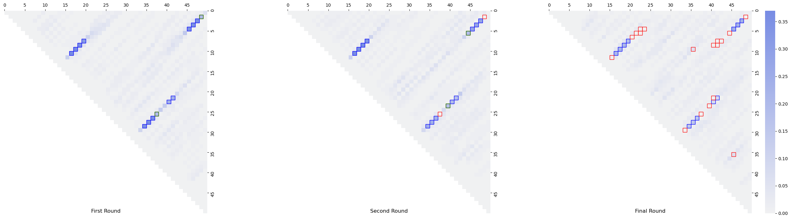
Generate stochastic optimization figure
import concurrent.futures
def mc_optimize_allsteps(model, objective, steps, temp, start=None):
res = list()
sampler = ir.Sampler(model)
cur = sampler.sample() if start is None else start
curval = objective(cur)
best, bestval = cur, curval
res.append((rna.ass_to_seq(best),bestval))
ccs = model.connected_components()
weights = [1/len(cc) for cc in ccs]
for i in range(steps):
cc = random.choices(ccs,weights)[0]
new = sampler.resample(cc, cur)
newval = objective(new)
if (newval >= curval
or random.random() <= math.exp((newval-curval)/temp)):
cur, curval = new, newval
if curval > bestval:
best, bestval = cur, curval
res.append((rna.ass_to_seq(best),bestval))
return res
n = len(targets[0])
model = ir.Model(n, 4)
model.add_functions([rna.GCCont(i) for i in range(n)], 'gc')
for target in targets:
ss = rna.parse(target)
model.add_constraints(rna.BPComp(i, j) for (i, j) in ss)
model.add_functions([rna.BPEnergy(i, j, (i-1, j+1) not in ss)
for (i, j) in ss], 'energy')
model.set_feature_weight(-0.8, 'energy')
model.set_feature_weight(-0.3, 'gc')
objective = lambda x: - multi_defect(rna.ass_to_seq(x),targets,1)
def my_mc_optimize_allsteps(i):
random.seed(None)
res = mc_optimize_allsteps(model,objective,6400,0.01)
return [(b,-v) for b,v in res]
with concurrent.futures.ProcessPoolExecutor() as executor:
res = executor.map(my_mc_optimize_allsteps, range(48))
res = list(res)
the_steps = [0]+[25*(2**i) for i in range(8+1)]
res2 = [[r[steps][1] for r in res] for steps in the_steps]
fig, ax = plt.subplots()
box = ax.boxplot(res2,
labels=the_steps,
patch_artist=True,
boxprops=dict(facecolor='lightgrey',linewidth=1.25),
medianprops=dict(color='blue', linewidth=1.25)
)
ax.set_ylabel("Multi-defect")
ax.set_xlabel("Iterations")
ax.yaxis.grid(True)
plt.savefig("optimization.svg")
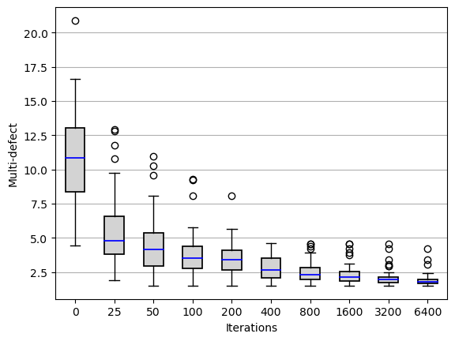
 1.9.7
1.9.7